Level 1 High-Power Rocket Certification
Trade Study, Construction & Launch — Madison Aerospace Club
Structured vehicle trade study, fin modification, construction, and successful launch April 4, 2026.
Program Objective
This project supports NAR Level 1 High Power Certification through vehicle selection, propulsion evaluation, and trajectory modeling in OpenRocket.
Instead of just picking whatever kit was available, I ran a controlled trade study across three commercially available rockets under a common motor. The goal was to find a vehicle with enough apogee margin above the 2200 ft certification target, safe deployment conditions, and room to modify fin geometry without losing certification compliance.
Propulsion System Selection
AeroTech H169WS — White Lightning™
All three vehicles were simulated on the same motor — the AeroTech H169WS — so the comparison is purely about airframe, not propulsion. The H169WS sits within Level 1 impulse limits and has a thrust-to-weight ratio that gives stable rail departure and clean ascent dynamics.
| Motor Diameter | 29 mm |
| Total Impulse | 239 N·s (Level 1 Range) |
| Average Thrust | 169 N |
| Propellant Type | White Lightning™ composite |
| Certification | NAR / TRA certified |
The thrust curve has a short high-thrust boost phase followed by sustained impulse delivery — fast enough off the rail, manageable structural loading through the burn.
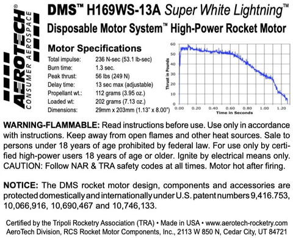
Manufacturer thrust curve and performance data for AeroTech H169WS.Vehicle Trade Study
Three kit rockets were modeled and compared under identical environmental conditions, launch rail setup, recovery configuration, and motor:
- YIRIS 338
- Kronos
- HI-TECH PK-56
Evaluation Criteria
- Launch rail exit velocity — confirms stable departure
- Apogee relative to 2200 ft certification target
- Maximum velocity and dynamic loading
- Maximum acceleration — structural consideration
- Time to apogee and total flight time
- Velocity at deployment and ground impact — recovery safety
Simulation Comparison Summary
| Vehicle | Vel. Off Rail (ft/s) | Apogee (ft) | Max Vel. (ft/s) | Max Accel (ft/s²) | Time to Apogee (s) | Total Flight (s) | Impact Vel. (ft/s) |
|---|---|---|---|---|---|---|---|
| YIRIS 338 | 59.1 | 2310 | 479 | 515 | 11.3 | 84.1 | 22.7 |
| Kronos | 74.5 | 2258 | 701 | 863 | 7.26 | 139 | 17.9 |
| HI-TECH PK-56 ★ Selected | 80.0 | 3170 | 804 | 947 | 11.7 | 113 | 21.3 |
Trajectory Simulation Outputs
Full flight profiles were reviewed for each vehicle to assess ascent shape, peak velocity timing, coast phase duration, and recovery deployment conditions.
YIRIS 338 — Flight Profile
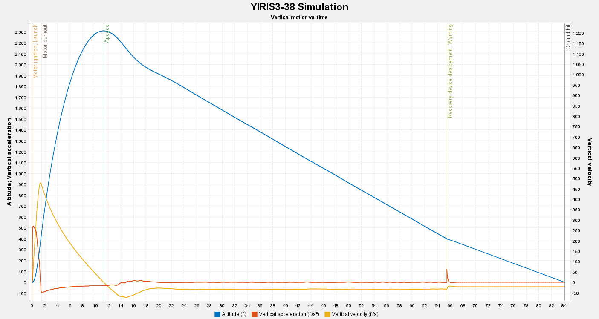
OpenRocket output for YIRIS 338 on AeroTech H169WS.Kronos — Flight Profile
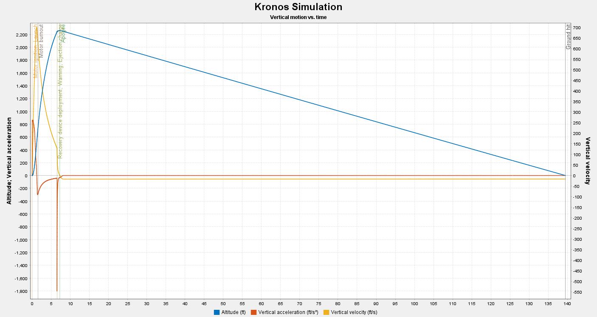
OpenRocket output for Kronos on AeroTech H169WS.HI-TECH PK-56 — Flight Profile (Selected)
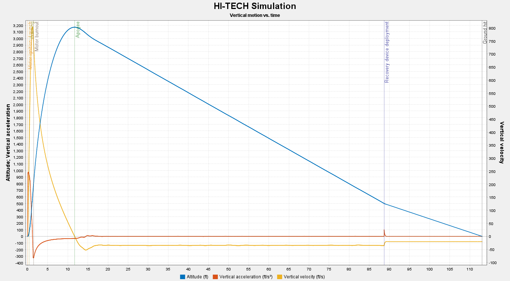
OpenRocket output for HI-TECH PK-56 on AeroTech H169WS.The PK-56 profile shows stable ascent, moderate peak acceleration, and clean deployment timing relative to motor burnout. No red flags in any of the recovery conditions.
Selection Rationale
The HI-TECH PK-56 came out on top on apogee by a clear margin — 3,170 ft vs 2,310 ft for the YIRIS and 2,258 ft for the Kronos. Peak acceleration and recovery velocities are both acceptable.
The extra altitude above the 2200 ft minimum gives room to try fin geometry changes without risking certification compliance. That's the main reason it won out over the YIRIS, which barely clears the target.
Fin Modification — 4 in to 3 in
The stock PK-56 fins are 4 inches, which put stability at 2.95 cal (15.8% of body length, CG at 35.53 in, CP at 40.277 in). That's stable, but too stable — an overly high stability margin makes the rocket strongly weathercock-prone, meaning it'll aggressively turn into any wind shift at altitude. At the apogees we were expecting, changing winds could carry it significantly off course.
We trimmed the fins down to 3 inches on a vertical band saw and rounded the leading edges. Stability came down to 2.1 cal (11.3% of body length, CG at 32.382 in, CP at 37.911 in) — still well above the 1.7 cal minimum, but much less sensitive to wind. The reduced fin area also drops drag enough that predicted apogee actually increases slightly to 3,287 ft.
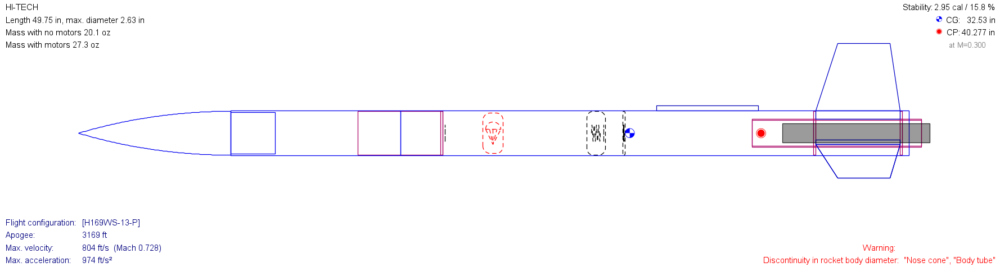
Stock 4 in fins — 2.95 cal, apogee 3,169 ft, max velocity 804 ft/s (Mach 0.728), max accel 947 ft/s².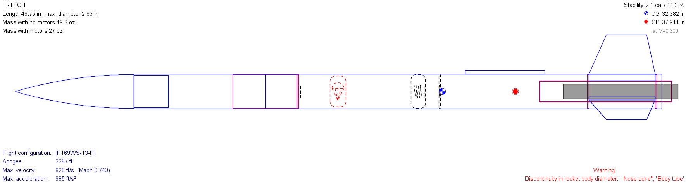
Trimmed 3 in fins — 2.1 cal, apogee 3,287 ft, max velocity 820 ft/s, max accel 985 ft/s².Structural Analysis — Eye Bolt FEA
While waiting on the kit, I ran FEA on the parachute mounting eye bolt in SolidWorks. The concern is the snatch load at deployment — a short impulsive tensile hit when the parachute opens at speed. The load case was 456 lbf axial tension, worst-case deployment.
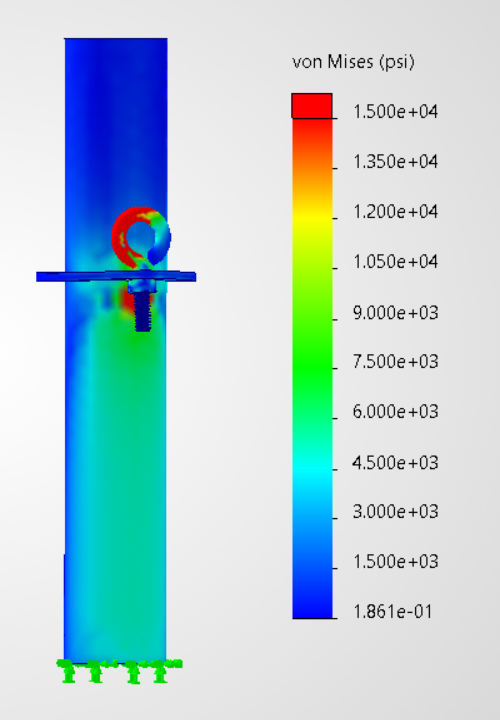
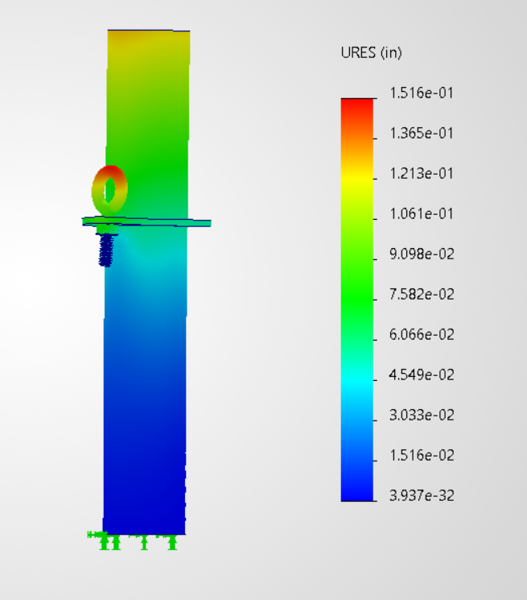
Construction
With the simulation work done and fins trimmed, construction started from the kit components. The build follows standard high-power practice — epoxy throughout, no shortcuts on surface prep.
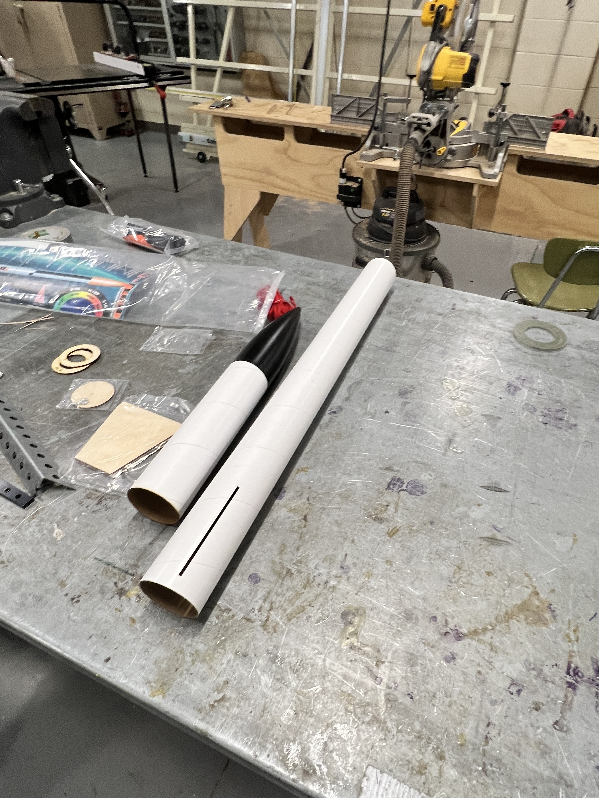
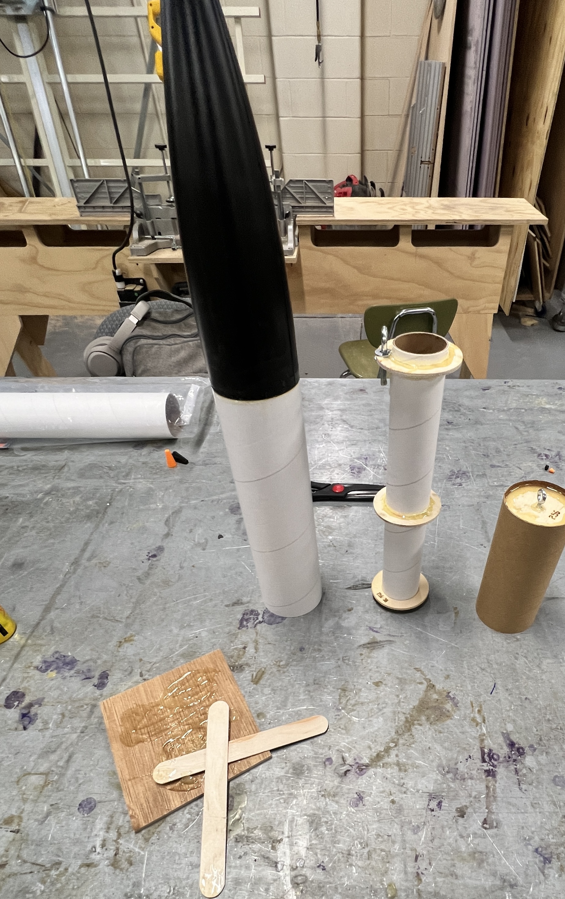
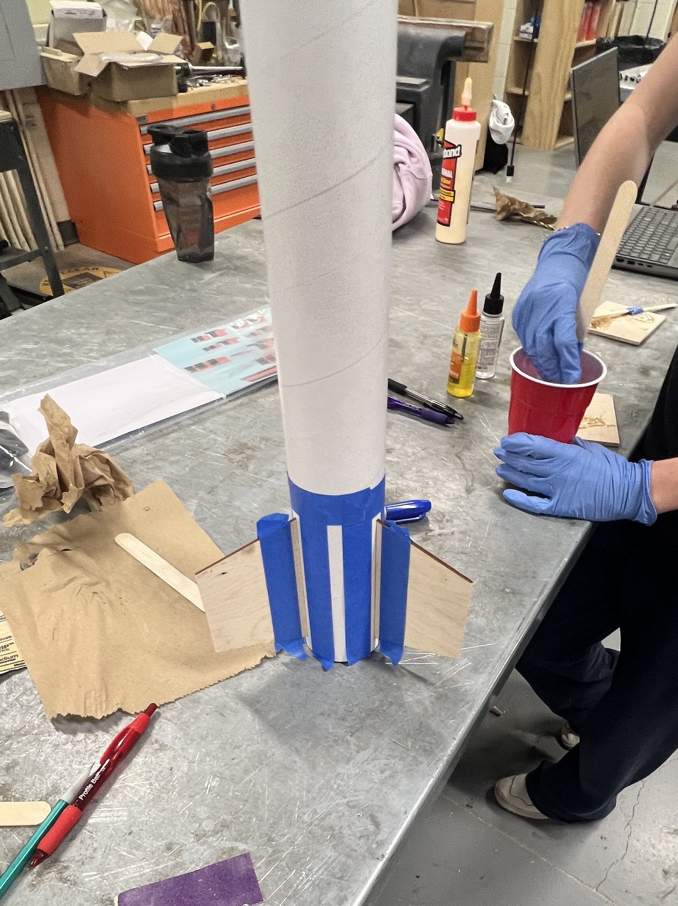

Launch Day — April 4, 2026
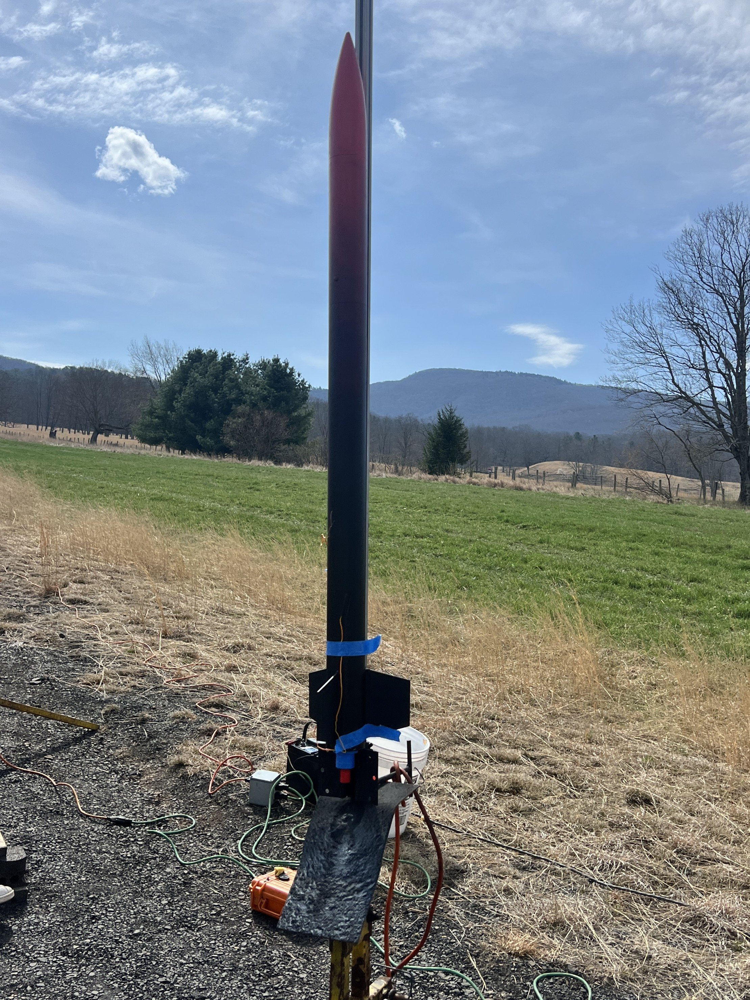
The flight went cleanly. Clean rail departure, straight boost, deployment on time. Retrieval involved a briar patch — the nose tip came back missing a little red paint, but the airframe was otherwise unscathed.
Planned Aerodynamic Refinement
SolidWorks Flow Simulation is next — looking at drag sensitivity to fin planform changes with these targets:
- Reduce overall flight time
- Keep apogee above 2200 ft
- Maintain adequate static stability margin
- Avoid a big jump in peak dynamic pressure
CFD drag adjustments will feed back into OpenRocket to check system-level performance before committing to any modified configuration.
Reflection
This was a great first exposure to high-power rocketry. Working through the vehicle trade study, making the call on fin geometry, building the airframe by hand, and watching it fly cleanly — it all connects in a way that simulation alone doesn't. The software and analysis work (OpenRocket, FEA, the stability margin reasoning) felt a lot more meaningful with a physical result at the end.
Looking forward to designing and building my own rocket next year for L1 certification with Madison Aerospace Club — with a lot more informed choices going in.